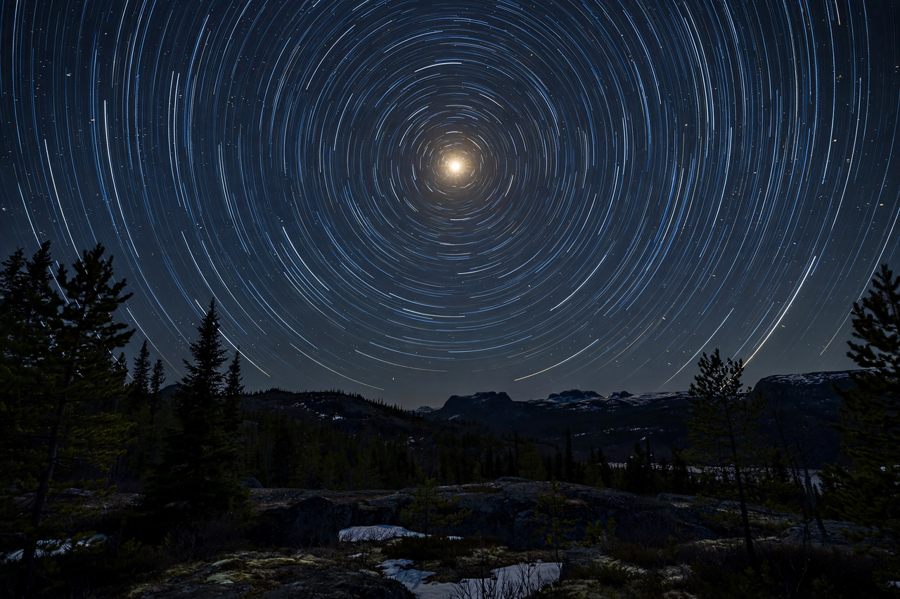

[Image placeholder: Star trails around the north celestial pole, near Polaris]**Polaris** is a star in the northern circumpolar constellation of Ursa Minor. It is designated **α Ursae Minoris** (Latinized to Alpha Ursae Minoris) and is commonly called the **North Star** or Pole Star. With an apparent magnitude that fluctuates around 1.98, it is the brightest star in the constellation and is readily visible to the naked eye throughout the year in the Northern Hemisphere.
Polaris lies very close to the north celestial pole, making it the current northern pole star: all the stars of the northern sky appear to rotate around it. The system consists of a yellow supergiant and two smaller companions, at a distance of roughly 450 light-years from the Sun (estimates vary). Polaris is a classical Cepheid variable, though its pulsations famously almost ceased in the 1990s before partially recovering.
Because of the precession of Earth's axis, the celestial pole slowly moves: Thuban (α Draconis) was the pole star around 2700 BC, and Vega will hold the role in roughly 12,000 years. Polaris has been used for navigation since antiquity because its altitude above the horizon approximately equals the observer's latitude.
The primary star, Polaris Aa, is an F7 yellow supergiant of about 5–6 solar masses in a 30-year orbit with the close companion Polaris Ab; a third component, Polaris B, was known to William Herschel in 1780. As a Cepheid it pulsates with a period of about four days.